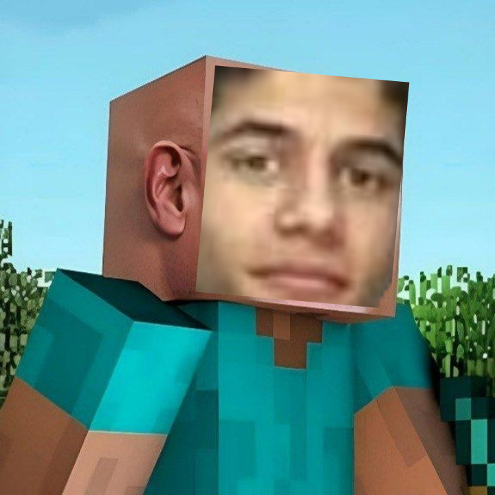
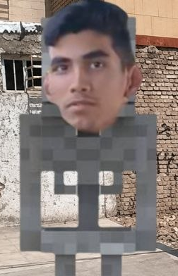
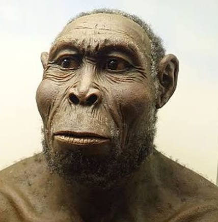
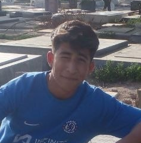

عماد
من سازندم، انتظار داری به خودم نقد کنم؟
یه یادگاری از رفقای همیشه باحال

من سازندم، انتظار داری به خودم نقد کنم؟
میشه بهش گفت نیگر سه بعدی متحرک. البته همه اونو به گشاد و سیاهوتریاکی بودنش میشناسن. شاید دلیل اینکه توی دویدن و دروازهبانی خوبه اینه که سیاهه؟ میاد میگه چرا این بلا سرم اومد، خب مشتی وقتی اندازه ۱۰ میلیون اکانت تبر میکنی معلومه چوب کارما یه جایی میخوره. اگه جایی خواستید کلاهبرداری کنید، حتماً از ایشون مشاوره بگیرید.

چیزی که عیان است چه حاجت به بیان است. با یه نگاه کردن میشه فهمید از اسکلتون رفرنس رفته. توی فوتبال خوبه چون هیچکس جرات نداره نزدیکش بشه، بخاطر اینکه ممکنه بشکنه. چون لاغره میتونید روی سرعتش، فوتبالش و کالاف دیوتی حساب کنید (اگه باد نبرش).
میتونم بهش بگم الجول عالمین. خدا نکنه چیزی توی اینستا ترند بشه، مخصوصاً انیمهای، فردا میبینی داره همونو توی مدرسه اجرا میکنه. هر چند ماه یه فاز افسردگی میگیره و یه جوری تعریف میکنه انگار ما توی آمریکا هستیم و اون توی ایران. خب مشتی ما هم سختی داریم ولی نمیام بگیم. توی گیمهای RPG خوبه و میتونید روش حساب باز کنید (اگه چیت نزنه). توی دعوا هم میتونید حساب باز کنید، ولی خب اگه جو و گندهگوزی نکنه.
کوتوله شبیه به گابلین کلش رویال، زود ناراحت میشه. سیسی توی جمع پسرونه انتظار نداشته باش با ملایمت باهات برخورد بشه. نمیدونم بخاطر اینکه با کریم رابطه نزدیکی داره یا چی، سلیقههاشون شبیه همه و میتونید فحشهایی که به کریم دادمو برای مهدی هم حساب کنید. برعکس بقیه که ممکنه فقط با یه چپ و راست نگاه کردن جیبتو بزنن، مهدی با مرامه و لاشی نیست (شاید).

قبل از همه چی یه سوال دارم: مشتی آخه کی توی ۱۶ سالگی ازدواج میکنه؟ به هر حال امیدوارم خوش و خرم زندگی کنید. محمدجواد ما توی سال ۲۰۲۶ زندگی میکنیم، نظرت چیه از قار دربیای و یه کم از تکنولوژی سردربیاری؟ به خدا با سرچ کردن هم میتونی یاد بگیری چجوری سرور ماینکرفت بسازی، بکش بیرون از من. محمدجواد میتونم بهش بگم لاشی، البته از نوع خوبش؛ یعنی برای کسای دیگه لاشیه و برای رفیقاش و آشناهاش خوبه.

این بشر اصلاً وجود نداره، یهو غیب میشه، میبینی بعد ۲ ماه شده هادی چوپان مخصوص مناطق کصومیه اهواز. با اعتماد به نفسش میتونه ایلان ماسک رو ورشکسته کنه، حداقل اینجوری فکر میکنه (ریده). والا اینقدر غیب میشه و میاد که هیچی از یادم نیست، بجز اینکه آدم جوگیریه و یکی بهش بگه خودتو از پل بنداز، این میندازه.